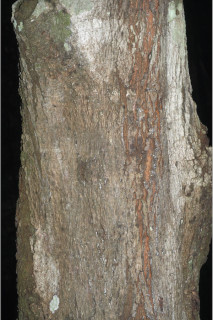
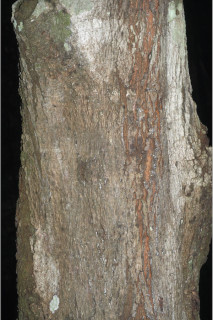
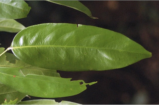
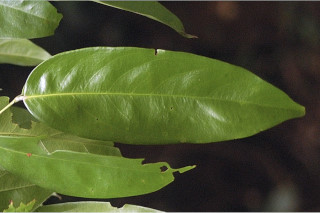

| Leaves : | Leaves compound , paripinnate , alternate , distichous ; stipules in pairs, foliaceous , to 4 x 1.5 cm, narrow ovate , acuminate , with basal broad reniform appendage; rachis pulvinate , 5-13.5 cm long, slightly winged , otherwise terete ; petiolule 0.5-0.8 cm long; leaflets 3 pairs, opposite or subopposite , usually lower pair slightly smaller than upper, lamina 9-25 x 2.5-7 cm, narrow elliptic or lanceolate , apex gradually long acuminate , base acute , margin entire , chartaceous to coriaceous , glabrous ; midrib flat above; secondary_nerves 9-13 pairs, ascending towards apex ; tertiary_nerves reticulate . |
 


 
